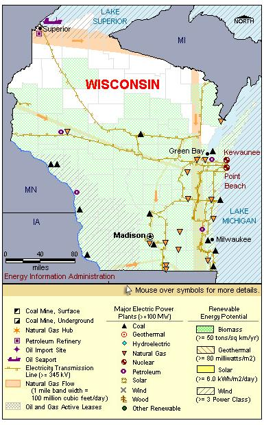

State Overview
There are two operating nuclear power plants in Wisconsin:
Kewaunee in Kewaunee County
- Kewaunee was the fourth nuclear plant built in Wisconsin, and the 44th built in the United States.
- In June 2005, the plant was acquired by Dominion from its previous owners, Wisconsin Public Service Corporation and Alliant Energy. The Virginia-based company owns the North Anna and Surry plants in its home state, and acquired one other out-of-state plant, Millstone in Connecticut.
Point Beach in Manitowoc County
- Wisconsin's first commercial reactor, Point Beach 1 is one of the oldest reactors still in service. It went into commercial service in December 1970.
- In October 2007, Wisconsin Energy Corporation completed the sale of the Point Beach facility to FPL Energy.
- On October 7, 2007, Florida Power & Light acquired Point Beach from the Nuclear Management Company. The purchase price was reported as $998 million, of which $215 million was for fuel, inventory, and other items.
Contribution of Nuclear Power
Wisconsin’s nuclear capacity is approximately 10% of the State’s total electric generating capacity.
Nuclear generation represents about 20% of the State’s total generation.
Wisconsin is a net importer of electric energy, importing 20% of its electric power use.
License Renewals
- Kewaunee: In August 2008, Kewaunee requested approval for a 20-year life extension. The current license expires December 21, 2013.
- Point Beach: In December 2005, Point Beach received approval for a 20-year life extension. Unit 1’s license now expires in October 2030. Unit 2’s license now expires in March 2033.
Permanently Shutdown Commercial Reactors
- La Crosse in Vernon County

|
| Wisconsin Total Electric Power Industry, Summer Capacity and Net Generation, by Energy Source, 2008 |
| Primary Energy Source |
Summer Capacity
(MW) |
Share of State Total
(Percent) |
Net Generation
(Thousand MWh) |
Share of State Total
(Percent) |
| Nuclear |
1,582 |
9.0 |
12,155 |
19.1 |
| Coal |
7,597 |
43.1 |
41,706 |
65.7 |
| Hydro and Pumped Storage |
485 |
2.8 |
1,616 |
2.5 |
| Natural Gas |
6,544 |
37.1 |
5,244 |
8.3 |
| Other1 |
21 |
0.1 |
74 |
0.1 |
| Other Renewable1 |
518 |
2.9 |
1,754 |
2.8 |
| Petroleum |
874 |
5.0 |
931 |
1.5 |
| Total |
17,622 |
100.0 |
63,480 |
100.0 |
| Wisconsin Nuclear Power Plants, Summer Capacity and Net Generation, 2008 |
| Plant Name/Total Reactors |
Summer Capacity
(MW) |
Net Generation
(Thousand MWh) |
Share of State Nuclear
Net Generation
(Percent) |
Owner |
Kewaunee
Unit 1 |
556 |
4,387 |
36.1 |
Dominion Energy Kewaunee Inc. |
Point Beach
Unit 1, Unit 2 |
1,026 |
7,767 |
63.9 |
FPL Energy Point Beach |
2 Plants
3 Reactors |
1,582 |
12,155 |
100.0 |
|
|
Plant Profiles
Kewaunee Power Station
| Unit |
Summer Capacity
(MW) |
Net Generation
(Thousand MWh) |
Summer Capacity Factor
(Percent) |
Type |
Commercial Operation Date |
License Expiration Date |
| 1 |
556 |
4,387 |
90.1 |
PWR |
6/16/1974 |
12/21/2013 |
| |
556 |
4,387 |
90.1 |
|
|
|
Operator: Dominion Energy Kewaunee
Location and Service Territory: The Kewaunee nuclear plant occupies a 900-acre site in Carlton, Wisconsin, about 35 miles southeast of Green Bay.
Construction Cost: $776.15 million (2007 USD)
Reactor Description: Kewaunee Station has a single Westinghouse two-loop pressurized water reactor.
Cooling System: Kewaunee uses water from Lake Michigan in its once-through cooling system.
Point Beach Nuclear Plant
| Point Beach |
| Unit |
Summer Capacity
(MW) |
Net Generation
(Thousand MWh) |
Summer Capacity Factor
(Percent) |
Type |
Commercial Operation Date |
License Expiration Date |
| 1 |
510 |
3,724 |
83.3 |
PWR |
12/21/1970 |
10/5/2030 |
| 2 |
516 |
4,044 |
89.5 |
PWR |
10/1/1972 |
3/8/2033 |
| |
1,026 |
7,767 |
86.4 |
|
|
|
Operator: FPL Energy Point Beach, LLC
Location and Service Territory: Point Beach Nuclear Plant is located about a mile from the town of Two Creeks in Manitowic County on the western shore of Lake Michigan. The site covers 1,050 acres, with all but 70 acres used mainly for agriculture.
Construction Cost: $589.1 million (2007 USD)
Staffing: Approximately 660 employees work at the plant. Management of the site was consolidated with the Kewaunee plant.
Reactor Descriptions: Both of the units are Westinghouse two-loop pressurized water reactors.
Cooling System: Point Beach is cooled with a once-through cooling system that draws water from Lake Michigan.
see also:
more annual nuclear statistics
projected electricity capacity to 2035
international
electricity statistics
|
|